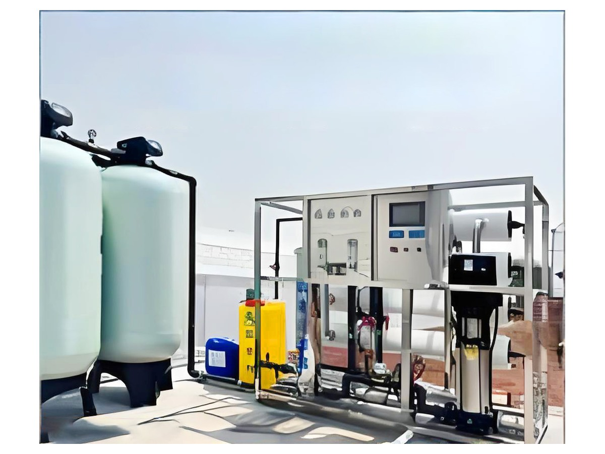

Seawater Desalination EquipmentUltrafiltration Membranes
Ultrafiltration Equipment
A space for ultrafiltration applications, membrane modules, system configuration and cleaning. Models and specifications: 待确认.
- Service scope
- 待确认
- Equipment & specifications
- 待确认